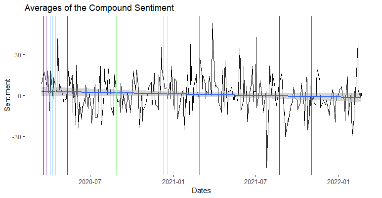
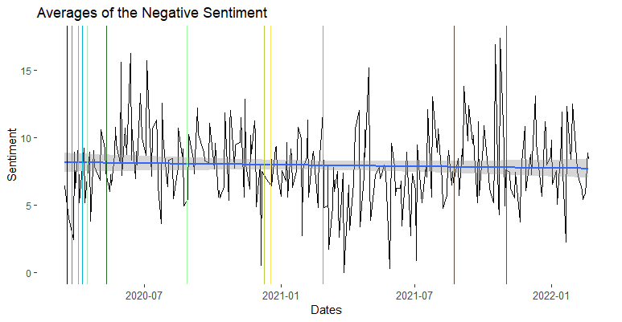
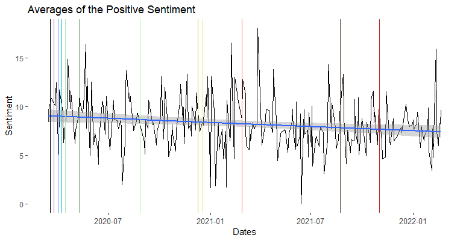
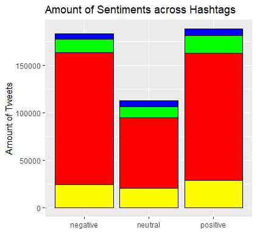
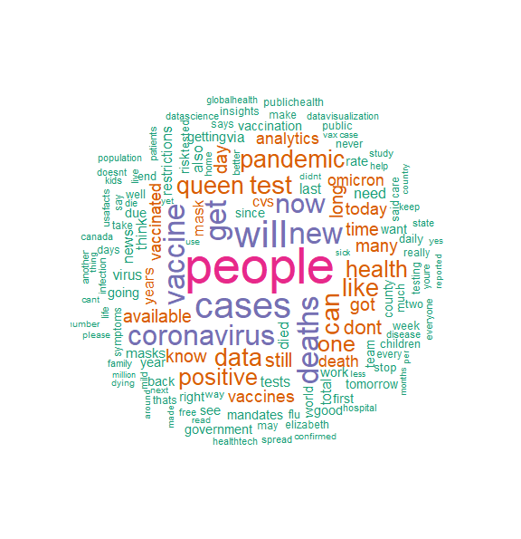

Twitter Data Collection
- by Archie Rincon
Twitter is a social media platform, and the first tweet was tweeted out on March 21, 2006. The completed version went live in July 2006. Users can post small blurbs, called tweets, of what they are doing, and other users are allowed to see it and react it. Users can react by; liking the tweet, "retweeting" the tweet, or replying to the author.
Data Collection
I collected tweets from Twitter by scraping the platform. I used a library from GitHub called Twint in Python, and since Twint only allows up to a week to be scraped, I needed to set up an algorithm that searched all weeks from March 14, 2020, to February 22, 2022. I did this by using a loop that stopped at the last week, and got every single date seven days after March 14, 2020. It then collected tweets, given a start date and end date. In total, this algorithm collected up to 514,283 tweets (after pruning for non-English tweets, text was processed in Python with LangDetect) and searching across eight different hashtags/keywords ("#Covid", "#COVID19", "#coronavirus", "#covid_19", "Covid", "COVID19", "coronavirus", "covid-19".) Upon cleanup and processing, the data was then given to Duane to process for sentiment, and once the data was given sentiment values I was able to visualize the data from there.
Findings - Data Visualization
All markings on the graphs can be mapped to the dates found here
Since the data had multiple values per day, graphing lines was not an option. I took the average of every single day that had tweets, with the help of Jacob Bellows, on Excel. The only days that were excluded were days that did not have tweets or were outside the date range.
Averages of the Compound Sentiment with Dates
This is the compound average. The compound score is the sum of positive, negative and neutral scores and normalized between -1 and +1. For the purposes of graphing, this number has been multiplied from -100 and +100. The more a score is closer to +100, the higher the positivity. However, the more a score is closer to -100, the higher the negativity. The graph has been given a regression line, to best describe the behavior of the data. We can see that there is a negative relationship about how Twitter feels about opinions concerning COVID-19 and time going on.
Averages of the Positive/Negative Sentiment with Dates
This is the negative average. The negative score is based on a ratio of proportions of the text that fall into the category, and should sum up to be close or equal to one. The same goes for the positive score. Both the negative and positive and neutral scores should add up to be 1 (or close to it.)
"The pos, neu, and neg scores are ratios for proportions of text that fall in each category (so these should all add up to be 1... or close to it with float operation). These are the most useful metrics if you want to analyze the context & presentation of how sentiment is conveyed or embedded in rhetoric for a given sentence." - The VADER GitHub Page
How Many Negative/Positive/Neutral Tweets per Hashtag?
Some notes about the graph:
- Red: "covid" and "#covid" polarities amount
- Green: "covid19" and "#covid19" polarities amount
- Blue: "coronavirus" and "#coronavirus" polarities amount
- Yellow: "covid-19" and "#covid_19" polarities amount
What I found unexpected was that there are more positive tweets but the overall compound graph showed that it had a negative slope.
Word Clouds
This WordCloud is by Kalyssa Harris
Methods
All graphs were achieved with R, programmed by me (Archie). All tweets were collected in Python with Twint to scrape Twitter, by me (Archie). All tweets were then processed to determine if they were in English or not using LangDetect in Python, by me (Archie), and given a sentiment score with VADER, by Duane.